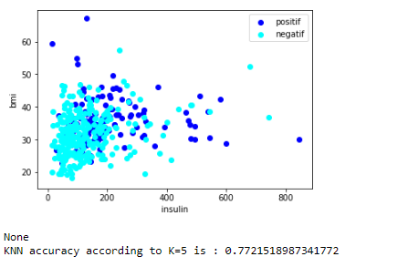
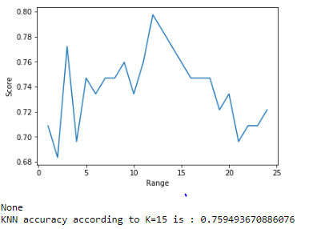

Implementasi data K-Nearest Neighbor¶
Pengertian tentang K-Nearest Neighbor¶

K-nearest neighbors adalah algoritma yang berfungsi untuk melakukan klasifikasi suatu data berdasarkan data pembelajaran (train data sets), yang diambil dari k tetangga terdekatnya (nearest neighbors). Dengan k merupakan banyaknya tetangga terdekat.
Cara Kerja Algoritma K-Nearest Neighbors (KNN)¶
K-nearest neighbors melakukan klasifikasi dengan proyeksi data pembelajaran pada ruang berdimensi banyak. Ruang ini dibagi menjadi bagian-bagian yang merepresentasikan kriteria data pembelajaran. Setiap data pembelajaran direpresentasikan menjadi titik-titik c pada ruang dimensi banyak.
Klasifikasi Terdekat (Nearest Neighbor Classification)¶
Data baru yang diklasifikasi selanjutnya diproyeksikan pada ruang dimensi banyak yang telah memuat titik-titik c data pembelajaran. Proses klasifikasi dilakukan dengan mencari titik c terdekat dari c-baru (nearest neighbor). Teknik pencarian tetangga terdekat yang umum dilakukan dengan menggunakan formula jarak euclidean*.* Berikut beberapa formula yang digunakan dalam algoritma knn.
Algoritma K-Nearest Neighbor¶
Kelebihan dan Kekurangan dari Algoritma K-NN¶
Kelebihan :
Sangat nonlinear
- KNN merupakan salah satu algoritma (model) pembelajaran mesin yang bersifat nonparametrik. Pembahasan mengenai model parametrik dan model nonparametrik bisa menjadi artikel sendiri, namun secara singkat, definisi model nonparametrik adalah model yang tidak mengasumsikan apa-apa mengenai distribusi instance di dalam dataset. Model nonparametrik biasanya lebih sulit diinterpretasikan, namun salah satu kelebihannya adalah garis keputusan kelas yang dihasilkan model tersebut bisa jadi sangat fleksibel dan nonlinear.
Mudah dipahami dan diimplementasikan
- Dari paparan yang diberikan dan penjelasan cara menghitung jarak dalam artikel ini, cukup jelas bahwa algoritma kNN mudah dipahami dan juga mudah dimplementasikan. Untuk mengklasifikasi instance x menggunakan kNN, kita cukup mendefinisikan fungsi untuk menghitung jarak antar-instance, menghitung jarak x dengan semua instance lainnya berdasarkan fungsi tersebut, dan menentukan kelas x sebagai kelas yang paling banyak muncul dalam k instance terdekat.
Kekurangan :
-
Perlu menunjukkan parameter K (jumlah tetangga terdekat)
-
Tidak menangani nilai hilang (missing value) secara implisit
-
Jika terdapat nilai hilang pada satu atau lebih variabel dari suatu instance, perhitungan jarak instance tersebut dengan instance lainnya menjadi tidak terdefinisi. Bagaimana coba, menghitung jarak dalam ruang 3-dimensi jika salah satu dimensi hilang? Karenanya, sebelum menerapkan kNN kerap dilakukan imputasi untuk mengisi nilai-nilai hilang yang ada pada dataset. Contoh teknik imputasi yang paling umum adalah mengisi nilai hilang pada suatu variabel dengan nilai rata-rata variabel tersebut (mean imputation).
-
Sensitif terhadap data pencilan (outlier)
-
Seperti yang telah dijelaskan Ali pada artikel sebelumnya, kNN bisa jadi sangat fleksibel jika k kecil. Fleksibilitas ini mengakibatkan kNN cenderung sensitif terhadap data pencilan, khususnya pencilan yang terletak di “tengah-tengah” kelas yang berbeda. Lebih jelasnya, perhatikan ilustrasi di bawah. Pada gambar kiri, seluruh instance bisa diklasifikasikan dengan benar ke dalam kelas biru dan jingga. Tetapi, ketika ditambahkan instance biru di antara instance jingga, beberapa instance jingga menjadi salah terklasifikasi.Perlu dipilih k yang tepat untuk mengurangi dampak data pencilan dalam kNN.
## Implementasi K-Nearest Neighbor
Langkah-langkah implementasi K-Nearest Neighbor :
Dataset K-Nearset Neighbor "PimaIndians.csv"
##### 1. Mengimportkan library
import numpy as np import pandas as pd import matplotlib.pyplot as plt
##### 2. Mengimport dataset
data = pd.read_csv("PimaIndians.csv")
##### 3. Menampilkan data yang sudah di masukkan
print (data.describe()) print (data.head()) print (data.tail()) print (data.describe())
##### 4. Mengubah nama kolom yang ingin di jadikan kelas karena nama sebelumnya tidak jelas
data.rename(columns={ 'test': 'symptom_class' }, inplace=True)
##### 5. Membedakan data "positif" dan "negatif"
positif = data[data.symptom_class == "positif"] negatif = data[data.symptom_class == "negatif"] plt.scatter(positif.insulin, positif.bmi, color = "blue",label = "positif") plt.scatter(negatif.insulin, negatif.bmi, color = "cyan",label = "negatif") plt.legend() plt.xlabel("insulin") plt.ylabel("bmi") print (plt.show())
##### 6. Kolom symptom_class mempunyai dua nilai kelas yaitu "positif" dan "negatif" dan merupakan data yang akan diklasifikasi
data.symptom_class = [1 if each == "positif" else 0 for each in data.symptom_class]
##### 7. Memisahkan data x dan y, y yang akan dijadikan sebagai kolom symptom_class dikarenakan kolom ini yang digunakan untuk klasifikasi dan kolom yang lain akan menjadi nilai x dan menormalisasikan data x
y = data.symptom_class.values x_ = data.drop(["symptom_class"],axis=1) x = (x_ - np.min(x_))/(np.max(x_)-np.min(x_)).values
##### 8. Sebelum menghitung akurasinya, langkah pertama kita bagi menjadi data train dan test , selanjutkan akan menggunakan data latih dan menerapkan pada data uji untuk mengukur akurasi
from sklearn.model_selection import train_test_split x_train, x_test, y_train, y_test = train_test_split(x, y, test_size=0.2,random_state =42)
##### 9. Membuat model KNN nya untuk menguji datanya
from sklearn.neighbors import KNeighborsClassifier knn = KNeighborsClassifier(n_neighbors = 3) #set K neighbor as 3 knn.fit(x_train,y_train) predicted_y = knn.predict(x_test) print("KNN accuracy according to K=5 is :",knn.score(x_test,y_test))
##### 10. Asumsikan K=5 menjadi yang pertama, jadi loopnya akan berulang 25 kali dan memberikan akurasi pada setiap literasinya sehingga dapat memenuhi nilai K yang optimal
score_array = [] for each in range(1,25): knn_loop = KNeighborsClassifier(n_neighbors = each) #set K neighbor as 3 knn_loop.fit(x_train,y_train) score_array.append(knn_loop.score(x_test,y_test)) plt.plot(range(1,25),score_array) plt.xlabel("Range") plt.ylabel("Score") print (plt.show())
##### 11. Jika menggunakan data K=15, maka akan mendapatkan skor maksimal 80%
knn_final = KNeighborsClassifier(n_neighbors = 15) #set K neighbor as 15 knn_final.fit(x_train,y_train) predicted_y = knn_final.predict(x_test) print("KNN accuracy according to K=15 is :",knn_final.score(x_test,y_test))
## Hasil Implementasi KNN :
#### 1. Tampilan dataset :
pregnant glucose diastolic triceps insulin bmi \
count 392.000000 392.000000 392.000000 392.000000 392.000000 392.000000
mean 3.301020 122.627551 70.663265 29.145408 156.056122 33.086224
std 3.211424 30.860781 12.496092 10.516424 118.841690 7.027659
min 0.000000 56.000000 24.000000 7.000000 14.000000 18.200000
25% 1.000000 99.000000 62.000000 21.000000 76.750000 28.400000
50% 2.000000 119.000000 70.000000 29.000000 125.500000 33.200000
75% 5.000000 143.000000 78.000000 37.000000 190.000000 37.100000
max 17.000000 198.000000 110.000000 63.000000 846.000000 67.100000
diabetes age
count 392.000000 392.000000
mean 0.523046 30.864796
std 0.345488 10.200777
min 0.085000 21.000000
25% 0.269750 23.000000
50% 0.449500 27.000000
75% 0.687000 36.000000
max 2.420000 81.000000
pregnant glucose diastolic triceps insulin bmi diabetes age \
0 1 89 66 23 94 28.1 0.167 21
1 0 137 40 35 168 43.1 2.288 33
2 3 78 50 32 88 31.0 0.248 26
3 2 197 70 45 543 30.5 0.158 53
4 1 189 60 23 846 30.1 0.398 59
test
0 negatif
1 positif
2 positif
3 positif
4 positif
pregnant glucose diastolic triceps insulin bmi diabetes age \
387 0 181 88 44 510 43.3 0.222 26
388 1 128 88 39 110 36.5 1.057 37
389 2 88 58 26 16 28.4 0.766 22
390 10 101 76 48 180 32.9 0.171 63
391 5 121 72 23 112 26.2 0.245 30
test
387 positif
388 positif
389 negatif
390 negatif
391 negatif
pregnant glucose diastolic triceps insulin bmi \
count 392.000000 392.000000 392.000000 392.000000 392.000000 392.000000
mean 3.301020 122.627551 70.663265 29.145408 156.056122 33.086224
std 3.211424 30.860781 12.496092 10.516424 118.841690 7.027659
min 0.000000 56.000000 24.000000 7.000000 14.000000 18.200000
25% 1.000000 99.000000 62.000000 21.000000 76.750000 28.400000
50% 2.000000 119.000000 70.000000 29.000000 125.500000 33.200000
75% 5.000000 143.000000 78.000000 37.000000 190.000000 37.100000
max 17.000000 198.000000 110.000000 63.000000 846.000000 67.100000
diabetes age
count 392.000000 392.000000
mean 0.523046 30.864796
std 0.345488 10.200777
min 0.085000 21.000000
25% 0.269750 23.000000
50% 0.449500 27.000000
75% 0.687000 36.000000
max 2.420000 81.000000
#### 2. Tampilan Plot K=5 :

#### 3. Tampilan Plot K=15 :
